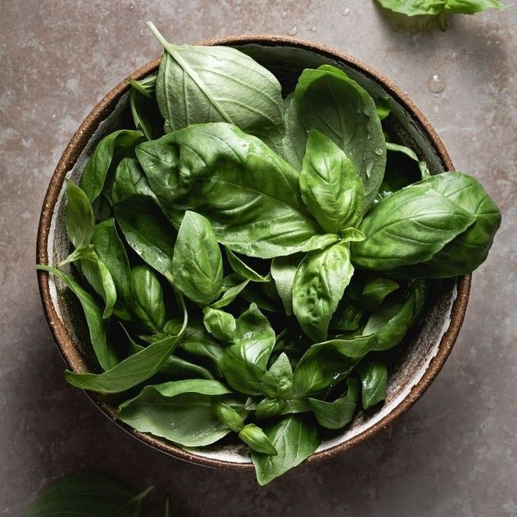

Manjericão
🌱 Como cultivar
O manjericão prefere clima quente e bastante sol, devendo receber pelo menos 4 a 6 horas de luz direta por dia. O solo deve ser leve, fértil e bem drenado, mantendo-se sempre úmido, mas sem encharcar. Retire regularmente as flores para estimular novas folhas e prolongar a vida útil da planta. A colheita pode começar cerca de 60 dias após o plantio, colhendo as folhas mais velhas primeiro.
🍽️ Receitas
💡 Curiosidade
Na Itália, especialmente no sul, o manjericão é considerado símbolo de amor e boa sorte. Dizem que se um casal plantar manjericão junto e cuidar dele, o relacionamento vai florescer e ficar forte, assim como a erva!